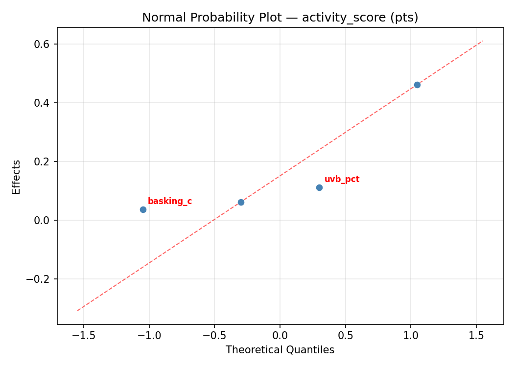
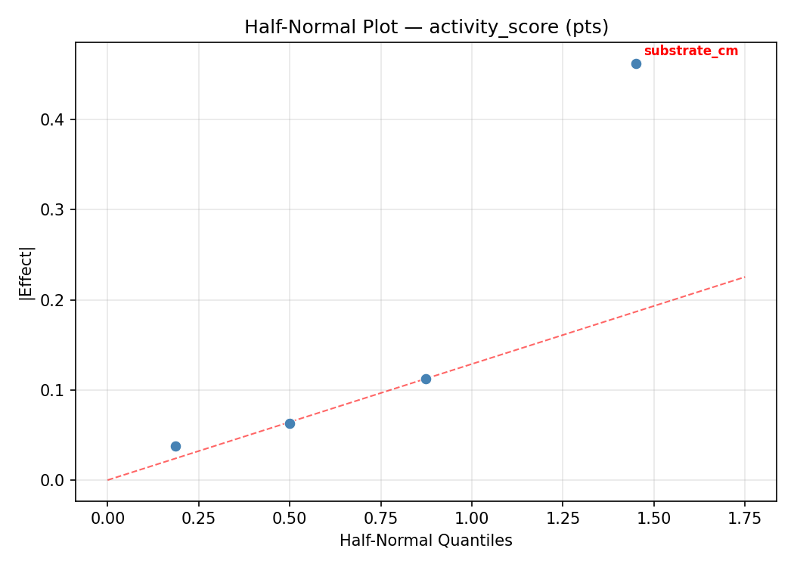
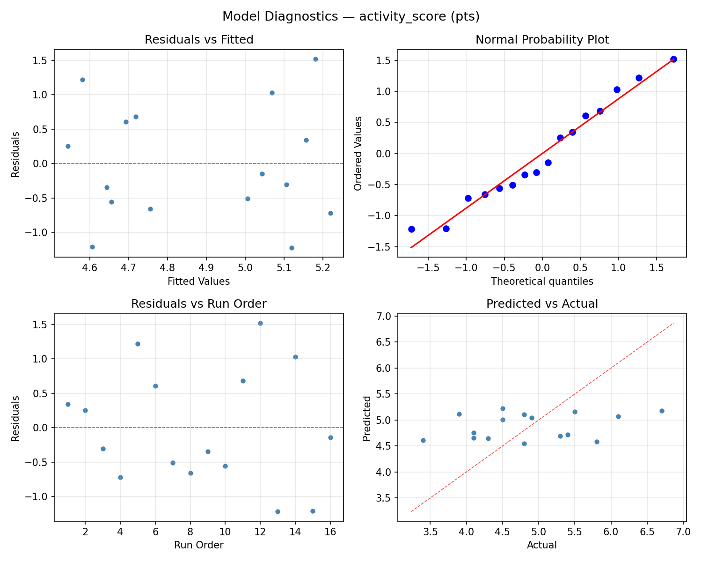
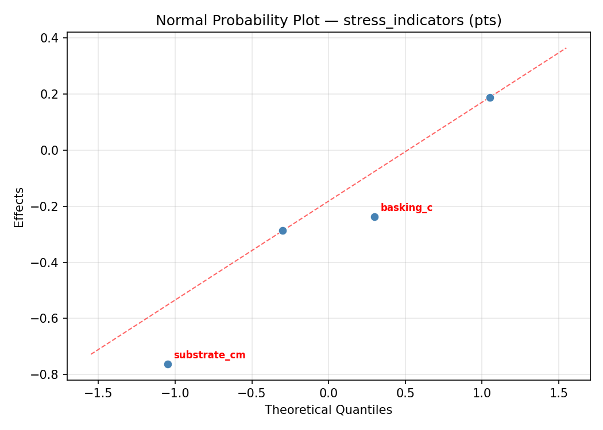
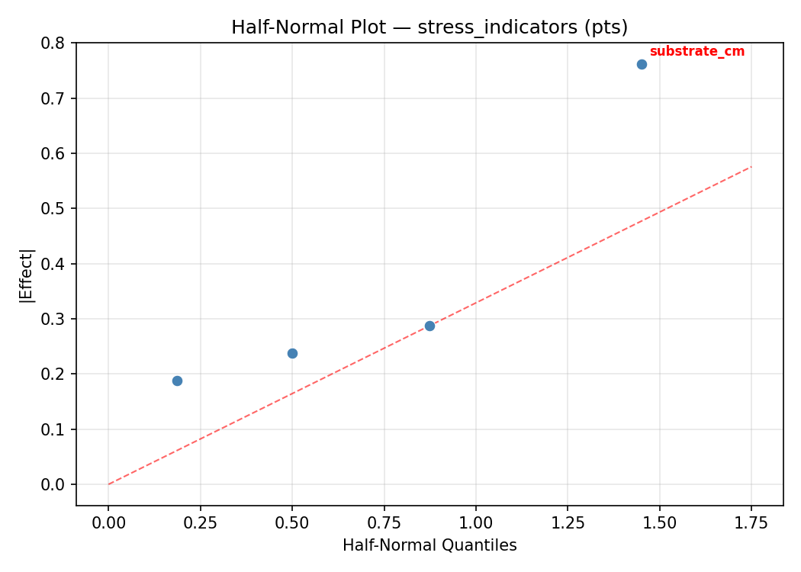
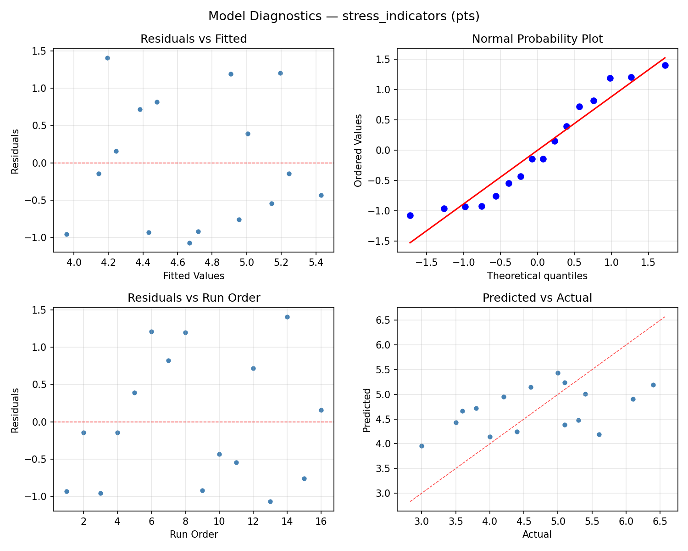

Summary
This experiment investigates reptile terrarium setup. Full factorial of basking temperature, humidity, UVB output, and substrate depth to maximize activity level and minimize stress indicators.
The design varies 4 factors: basking c (C), ranging from 30 to 40, humidity pct (%), ranging from 30 to 70, uvb pct (%UVI), ranging from 5 to 14, and substrate cm (cm), ranging from 3 to 15. The goal is to optimize 2 responses: activity score (pts) (maximize) and stress indicators (pts) (minimize). Fixed conditions held constant across all runs include species = bearded_dragon, enclosure L = 120cm.
A full factorial design was used to explore all 16 possible combinations of the 4 factors at two levels. This guarantees that every main effect and interaction can be estimated independently, at the cost of a larger experiment (16 runs).
Quadratic response surface models were fitted to capture potential curvature and factor interactions. The RSM contour plots below visualize how pairs of factors jointly affect each response.
Key Findings
For activity score, the most influential factors were substrate cm (34.4%), humidity pct (27.9%), uvb pct (22.7%). The best observed value was 6.7 (at basking c = 40, humidity pct = 30, uvb pct = 14).
For stress indicators, the most influential factors were basking c (62.5%), humidity pct (24.0%), uvb pct (10.6%). The best observed value was 3.0 (at basking c = 30, humidity pct = 70, uvb pct = 5).
Recommended Next Steps
- Consider whether any fixed factors should be varied in a future study.
Experimental Setup
Factors
| Factor | Low | High | Unit |
|---|
basking_c | 30 | 40 | C |
humidity_pct | 30 | 70 | % |
uvb_pct | 5 | 14 | %UVI |
substrate_cm | 3 | 15 | cm |
Fixed: species = bearded_dragon, enclosure_L = 120cm
Responses
| Response | Direction | Unit |
|---|
activity_score | ↑ maximize | pts |
stress_indicators | ↓ minimize | pts |
Configuration
{
"metadata": {
"name": "Reptile Terrarium Setup",
"description": "Full factorial of basking temperature, humidity, UVB output, and substrate depth to maximize activity level and minimize stress indicators"
},
"factors": [
{
"name": "basking_c",
"levels": [
"30",
"40"
],
"type": "continuous",
"unit": "C"
},
{
"name": "humidity_pct",
"levels": [
"30",
"70"
],
"type": "continuous",
"unit": "%"
},
{
"name": "uvb_pct",
"levels": [
"5",
"14"
],
"type": "continuous",
"unit": "%UVI"
},
{
"name": "substrate_cm",
"levels": [
"3",
"15"
],
"type": "continuous",
"unit": "cm"
}
],
"fixed_factors": {
"species": "bearded_dragon",
"enclosure_L": "120cm"
},
"responses": [
{
"name": "activity_score",
"optimize": "maximize",
"unit": "pts"
},
{
"name": "stress_indicators",
"optimize": "minimize",
"unit": "pts"
}
],
"settings": {
"operation": "full_factorial",
"test_script": "use_cases/174_reptile_habitat/sim.sh"
}
}
Experimental Matrix
The Full Factorial Design produces 16 runs. Each row is one experiment with specific factor settings.
| Run | basking_c | humidity_pct | uvb_pct | substrate_cm |
|---|
| 1 | 30 | 70 | 14 | 15 |
| 2 | 40 | 30 | 5 | 15 |
| 3 | 30 | 70 | 5 | 15 |
| 4 | 30 | 70 | 14 | 3 |
| 5 | 40 | 70 | 14 | 3 |
| 6 | 40 | 30 | 14 | 3 |
| 7 | 40 | 70 | 5 | 3 |
| 8 | 40 | 30 | 5 | 3 |
| 9 | 30 | 30 | 5 | 15 |
| 10 | 30 | 30 | 14 | 3 |
| 11 | 40 | 70 | 5 | 15 |
| 12 | 40 | 70 | 14 | 15 |
| 13 | 30 | 70 | 5 | 3 |
| 14 | 40 | 30 | 14 | 15 |
| 15 | 30 | 30 | 5 | 3 |
| 16 | 30 | 30 | 14 | 15 |
Step-by-Step Workflow
1
Preview the design
$ python doe.py info --config use_cases/174_reptile_habitat/config.json
2
Generate the runner script
$ python doe.py generate --config use_cases/174_reptile_habitat/config.json \
--output use_cases/174_reptile_habitat/results/run.sh --seed 42
3
Execute the experiments
$ bash use_cases/174_reptile_habitat/results/run.sh
4
Analyze results
$ python doe.py analyze --config use_cases/174_reptile_habitat/config.json
5
Get optimization recommendations
$ python doe.py optimize --config use_cases/174_reptile_habitat/config.json
6
Multi-objective optimization
With 2 competing responses, use --multi to find the best compromise via Derringer–Suich desirability.
$ python doe.py optimize --config use_cases/174_reptile_habitat/config.json --multi
7
Generate the HTML report
$ python doe.py report --config use_cases/174_reptile_habitat/config.json \
--output use_cases/174_reptile_habitat/results/report.html
Features Exercised
| Feature | Value |
|---|
| Design type | full_factorial |
| Factor types | continuous (all 4) |
| Arg style | double-dash |
| Responses | 2 (activity_score ↑, stress_indicators ↓) |
| Total runs | 16 |
Analysis Results
Generated from actual experiment runs using the DOE Helper Tool.
Response: activity_score
Top factors: substrate_cm (34.4%), humidity_pct (27.9%), uvb_pct (22.7%).
ANOVA
| Source | DF | SS | MS | F | p-value |
|---|
| Source | DF | SS | MS | F | p-value |
| basking_c | 1 | 0.3306 | 0.3306 | 0.489 | 0.5154 |
| humidity_pct | 1 | 1.1556 | 1.1556 | 1.710 | 0.2478 |
| uvb_pct | 1 | 0.7656 | 0.7656 | 1.133 | 0.3358 |
| substrate_cm | 1 | 1.7556 | 1.7556 | 2.599 | 0.1679 |
| basking_c*humidity_pct | 1 | 0.0506 | 0.0506 | 0.075 | 0.7952 |
| basking_c*uvb_pct | 1 | 0.4556 | 0.4556 | 0.674 | 0.4489 |
| basking_c*substrate_cm | 1 | 0.0756 | 0.0756 | 0.112 | 0.7515 |
| humidity_pct*uvb_pct | 1 | 0.9506 | 0.9506 | 1.407 | 0.2888 |
| humidity_pct*substrate_cm | 1 | 2.1756 | 2.1756 | 3.220 | 0.1327 |
| uvb_pct*substrate_cm | 1 | 0.3906 | 0.3906 | 0.578 | 0.4813 |
| Error | 5 | 3.3781 | 0.6756 | | |
| Total | 15 | 11.4844 | 0.7656 | | |
Pareto Chart

Main Effects Plot

Normal Probability Plot of Effects

Half-Normal Plot of Effects

Model Diagnostics

Response: stress_indicators
Top factors: basking_c (62.5%), humidity_pct (24.0%), uvb_pct (10.6%).
ANOVA
| Source | DF | SS | MS | F | p-value |
|---|
| Source | DF | SS | MS | F | p-value |
| basking_c | 1 | 2.6406 | 2.6406 | 2.660 | 0.1638 |
| humidity_pct | 1 | 0.3906 | 0.3906 | 0.394 | 0.5580 |
| uvb_pct | 1 | 0.0756 | 0.0756 | 0.076 | 0.7936 |
| substrate_cm | 1 | 0.0056 | 0.0056 | 0.006 | 0.9429 |
| basking_c*humidity_pct | 1 | 0.0056 | 0.0056 | 0.006 | 0.9429 |
| basking_c*uvb_pct | 1 | 0.0156 | 0.0156 | 0.016 | 0.9050 |
| basking_c*substrate_cm | 1 | 2.4806 | 2.4806 | 2.499 | 0.1748 |
| humidity_pct*uvb_pct | 1 | 0.8556 | 0.8556 | 0.862 | 0.3958 |
| humidity_pct*substrate_cm | 1 | 1.0506 | 1.0506 | 1.058 | 0.3507 |
| uvb_pct*substrate_cm | 1 | 1.6256 | 1.6256 | 1.638 | 0.2568 |
| Error | 5 | 4.9631 | 0.9926 | | |
| Total | 15 | 14.1094 | 0.9406 | | |
Pareto Chart

Main Effects Plot

Normal Probability Plot of Effects

Half-Normal Plot of Effects

Model Diagnostics

Response Surface Plots
3D surfaces fitted with quadratic RSM. Red dots are observed data points.
activity score basking c vs humidity pct

activity score basking c vs substrate cm

activity score basking c vs uvb pct

activity score humidity pct vs substrate cm

activity score humidity pct vs uvb pct

activity score uvb pct vs substrate cm

stress indicators basking c vs humidity pct

stress indicators basking c vs substrate cm

stress indicators basking c vs uvb pct

stress indicators humidity pct vs substrate cm

stress indicators humidity pct vs uvb pct

stress indicators uvb pct vs substrate cm

Multi-Objective Optimization
When responses compete, Derringer–Suich desirability finds the best compromise.
Each response is scaled to a 0–1 desirability, then combined via a weighted geometric mean.
Overall Desirability
D = 0.6963
Per-Response Desirability
| Response | Weight | Desirability | Predicted | Dir |
|---|
activity_score |
1.5 |
|
5.50 0.6240 5.50 pts |
↑ |
stress_indicators |
1.0 |
|
3.50 0.8209 3.50 pts |
↓ |
Recommended Settings
| Factor | Value |
|---|
basking_c | 30 C |
humidity_pct | 30 % |
uvb_pct | 14 %UVI |
substrate_cm | 15 cm |
Source: from observed run #1
Trade-off Summary
Sacrifice = how much worse than single-objective best.
| Response | Predicted | Best Observed | Sacrifice |
|---|
stress_indicators | 3.50 | 3.00 | +0.50 |
Top 3 Runs by Desirability
| Run | D | Factor Settings |
|---|
| #12 | 0.6694 | basking_c=40, humidity_pct=70, uvb_pct=14, substrate_cm=3 |
| #3 | 0.5925 | basking_c=40, humidity_pct=30, uvb_pct=5, substrate_cm=3 |
Model Quality
| Response | R² | Type |
|---|
stress_indicators | 0.3499 | linear |
Full Multi-Objective Output
============================================================
MULTI-OBJECTIVE OPTIMIZATION
Method: Derringer-Suich Desirability Function
============================================================
Overall desirability: D = 0.6963
Response Weight Desirability Predicted Direction
---------------------------------------------------------------------
activity_score 1.5 0.6240 5.50 pts ↑
stress_indicators 1.0 0.8209 3.50 pts ↓
Recommended settings:
basking_c = 30 C
humidity_pct = 30 %
uvb_pct = 14 %UVI
substrate_cm = 15 cm
(from observed run #1)
Trade-off summary:
activity_score: 5.50 (best observed: 6.70, sacrifice: +1.20)
stress_indicators: 3.50 (best observed: 3.00, sacrifice: +0.50)
Model quality:
activity_score: R² = 0.2906 (linear)
stress_indicators: R² = 0.3499 (linear)
Top 3 observed runs by overall desirability:
1. Run #1 (D=0.6963): basking_c=30, humidity_pct=30, uvb_pct=14, substrate_cm=15
2. Run #12 (D=0.6694): basking_c=40, humidity_pct=70, uvb_pct=14, substrate_cm=3
3. Run #3 (D=0.5925): basking_c=40, humidity_pct=30, uvb_pct=5, substrate_cm=3
Full Analysis Output
=== Main Effects: activity_score ===
Factor Effect Std Error % Contribution
--------------------------------------------------------------
substrate_cm -0.6625 0.2188 34.4%
humidity_pct 0.5375 0.2188 27.9%
uvb_pct 0.4375 0.2188 22.7%
basking_c 0.2875 0.2188 14.9%
=== ANOVA Table: activity_score ===
Source DF SS MS F p-value
-----------------------------------------------------------------------------
basking_c 1 0.3306 0.3306 0.489 0.5154
humidity_pct 1 1.1556 1.1556 1.710 0.2478
uvb_pct 1 0.7656 0.7656 1.133 0.3358
substrate_cm 1 1.7556 1.7556 2.599 0.1679
basking_c*humidity_pct 1 0.0506 0.0506 0.075 0.7952
basking_c*uvb_pct 1 0.4556 0.4556 0.674 0.4489
basking_c*substrate_cm 1 0.0756 0.0756 0.112 0.7515
humidity_pct*uvb_pct 1 0.9506 0.9506 1.407 0.2888
humidity_pct*substrate_cm 1 2.1756 2.1756 3.220 0.1327
uvb_pct*substrate_cm 1 0.3906 0.3906 0.578 0.4813
Error 5 3.3781 0.6756
Total 15 11.4844 0.7656
=== Interaction Effects: activity_score ===
Factor A Factor B Interaction % Contribution
------------------------------------------------------------------------
humidity_pct substrate_cm -0.7375 34.7%
humidity_pct uvb_pct -0.4875 22.9%
basking_c uvb_pct -0.3375 15.9%
uvb_pct substrate_cm 0.3125 14.7%
basking_c substrate_cm -0.1375 6.5%
basking_c humidity_pct 0.1125 5.3%
=== Summary Statistics: activity_score ===
basking_c:
Level N Mean Std Min Max
------------------------------------------------------------
30 8 4.7375 0.8228 3.4000 5.8000
40 8 5.0250 0.9573 4.1000 6.7000
humidity_pct:
Level N Mean Std Min Max
------------------------------------------------------------
30 8 4.6125 0.7717 3.4000 5.5000
70 8 5.1500 0.9381 4.1000 6.7000
uvb_pct:
Level N Mean Std Min Max
------------------------------------------------------------
14 8 4.6625 0.9054 3.4000 6.1000
5 8 5.1000 0.8435 4.1000 6.7000
substrate_cm:
Level N Mean Std Min Max
------------------------------------------------------------
15 8 5.2125 0.9804 3.9000 6.7000
3 8 4.5500 0.6547 3.4000 5.4000
=== Main Effects: stress_indicators ===
Factor Effect Std Error % Contribution
--------------------------------------------------------------
basking_c 0.8125 0.2425 62.5%
humidity_pct -0.3125 0.2425 24.0%
uvb_pct 0.1375 0.2425 10.6%
substrate_cm 0.0375 0.2425 2.9%
=== ANOVA Table: stress_indicators ===
Source DF SS MS F p-value
-----------------------------------------------------------------------------
basking_c 1 2.6406 2.6406 2.660 0.1638
humidity_pct 1 0.3906 0.3906 0.394 0.5580
uvb_pct 1 0.0756 0.0756 0.076 0.7936
substrate_cm 1 0.0056 0.0056 0.006 0.9429
basking_c*humidity_pct 1 0.0056 0.0056 0.006 0.9429
basking_c*uvb_pct 1 0.0156 0.0156 0.016 0.9050
basking_c*substrate_cm 1 2.4806 2.4806 2.499 0.1748
humidity_pct*uvb_pct 1 0.8556 0.8556 0.862 0.3958
humidity_pct*substrate_cm 1 1.0506 1.0506 1.058 0.3507
uvb_pct*substrate_cm 1 1.6256 1.6256 1.638 0.2568
Error 5 4.9631 0.9926
Total 15 14.1094 0.9406
=== Interaction Effects: stress_indicators ===
Factor A Factor B Interaction % Contribution
------------------------------------------------------------------------
basking_c substrate_cm -0.7875 31.5%
uvb_pct substrate_cm 0.6375 25.5%
humidity_pct substrate_cm -0.5125 20.5%
humidity_pct uvb_pct -0.4625 18.5%
basking_c uvb_pct 0.0625 2.5%
basking_c humidity_pct -0.0375 1.5%
=== Summary Statistics: stress_indicators ===
basking_c:
Level N Mean Std Min Max
------------------------------------------------------------
30 8 4.2875 1.1154 3.0000 6.4000
40 8 5.1000 0.6279 4.0000 6.1000
humidity_pct:
Level N Mean Std Min Max
------------------------------------------------------------
30 8 4.8500 1.0757 3.5000 6.4000
70 8 4.5375 0.8959 3.0000 5.6000
uvb_pct:
Level N Mean Std Min Max
------------------------------------------------------------
14 8 4.6250 0.8049 3.6000 5.6000
5 8 4.7625 1.1649 3.0000 6.4000
substrate_cm:
Level N Mean Std Min Max
------------------------------------------------------------
15 8 4.6750 1.1411 3.0000 6.1000
3 8 4.7125 0.8442 3.8000 6.4000
Optimization Recommendations
=== Optimization: activity_score ===
Direction: maximize
Best observed run: #12
basking_c = 40
humidity_pct = 30
uvb_pct = 14
substrate_cm = 15
Value: 6.7
RSM Model (linear, R² = 0.0960, Adj R² = -0.2327):
Coefficients:
intercept +4.8813
basking_c -0.0813
humidity_pct -0.1062
uvb_pct -0.0563
substrate_cm +0.2187
RSM Model (quadratic, R² = 0.8199, Adj R² = -1.7012):
Coefficients:
intercept +0.9763
basking_c -0.0813
humidity_pct -0.1062
uvb_pct -0.0563
substrate_cm +0.2187
basking_c*humidity_pct -0.4938
basking_c*uvb_pct -0.1187
basking_c*substrate_cm +0.3313
humidity_pct*uvb_pct -0.0688
humidity_pct*substrate_cm -0.1938
uvb_pct*substrate_cm +0.3313
basking_c^2 +0.9763
humidity_pct^2 +0.9763
uvb_pct^2 +0.9763
substrate_cm^2 +0.9763
Curvature analysis:
basking_c coef=+0.9763 convex (has a minimum)
humidity_pct coef=+0.9763 convex (has a minimum)
substrate_cm coef=+0.9763 convex (has a minimum)
uvb_pct coef=+0.9763 convex (has a minimum)
Notable interactions:
basking_c*humidity_pct coef=-0.4938 (antagonistic)
basking_c*substrate_cm coef=+0.3313 (synergistic)
uvb_pct*substrate_cm coef=+0.3313 (synergistic)
Predicted optimum (from linear model, at observed points):
basking_c = 30
humidity_pct = 30
uvb_pct = 5
substrate_cm = 15
Predicted value: 5.3438
Surface optimum (via L-BFGS-B, linear model):
basking_c = 30
humidity_pct = 30
uvb_pct = 5
substrate_cm = 15
Predicted value: 5.3438
Model quality: Weak fit — consider adding center points or using a different design.
Factor importance:
1. substrate_cm (effect: -0.4, contribution: 47.3%)
2. humidity_pct (effect: -0.2, contribution: 23.0%)
3. basking_c (effect: -0.2, contribution: 17.6%)
4. uvb_pct (effect: 0.1, contribution: 12.2%)
=== Optimization: stress_indicators ===
Direction: minimize
Best observed run: #3
basking_c = 30
humidity_pct = 70
uvb_pct = 5
substrate_cm = 15
Value: 3.0
RSM Model (linear, R² = 0.2454, Adj R² = -0.0290):
Coefficients:
intercept +4.6938
basking_c +0.2062
humidity_pct +0.1813
uvb_pct +0.3562
substrate_cm +0.1187
RSM Model (quadratic, R² = 0.8896, Adj R² = -0.6565):
Coefficients:
intercept +0.9388
basking_c +0.2062
humidity_pct +0.1813
uvb_pct +0.3562
substrate_cm +0.1187
basking_c*humidity_pct +0.0938
basking_c*uvb_pct -0.4563
basking_c*substrate_cm +0.5062
humidity_pct*uvb_pct +0.2938
humidity_pct*substrate_cm -0.0437
uvb_pct*substrate_cm +0.0813
basking_c^2 +0.9388
humidity_pct^2 +0.9388
uvb_pct^2 +0.9388
substrate_cm^2 +0.9388
Curvature analysis:
uvb_pct coef=+0.9388 convex (has a minimum)
substrate_cm coef=+0.9388 convex (has a minimum)
basking_c coef=+0.9388 convex (has a minimum)
humidity_pct coef=+0.9388 convex (has a minimum)
Notable interactions:
basking_c*substrate_cm coef=+0.5062 (synergistic)
basking_c*uvb_pct coef=-0.4563 (antagonistic)
Predicted optimum (from linear model, at observed points):
basking_c = 40
humidity_pct = 70
uvb_pct = 14
substrate_cm = 15
Predicted value: 5.5563
Surface optimum (via L-BFGS-B, linear model):
basking_c = 30
humidity_pct = 30
uvb_pct = 5
substrate_cm = 3
Predicted value: 3.8313
Model quality: Weak fit — consider adding center points or using a different design.
Factor importance:
1. uvb_pct (effect: -0.7, contribution: 41.3%)
2. basking_c (effect: 0.4, contribution: 23.9%)
3. humidity_pct (effect: 0.4, contribution: 21.0%)
4. substrate_cm (effect: -0.2, contribution: 13.8%)